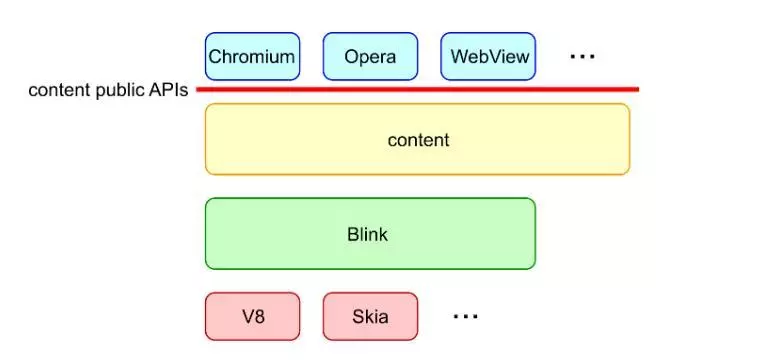

Blink
1. Blink 做了什么
Blink是Web平台的渲染引擎。粗略地说，Blink实现了在浏览器选项卡中呈现内容的所有内容：
实现Web平台的规范（例如，HTML标准），包括DOM，CSS和Web IDL
嵌入V8并运行JavaScript
- 从底层网络堆栈请求资源
- 构建DOM树
- 计算样式和布局
- 嵌入Chrome Compositor并绘制图形
Blink通过内容公共API嵌入许多客户，如Chromium，Android WebView和Opera。

从代码库的角度来看，“Blink”通常表示// third_party / blink /。从项目角度来看，“Blink”通常表示实现Web平台功能的项目。实现Web平台功能的代码跨度为// third_party / blink /，// content / renderer /，// content / browser /和其他位置。
2. 进程/线程架构
2.1 进程
Chromium具有多进程架构。 Chromium有一个浏览器进程和N个沙盒渲染器进程。Blink在渲染器进程中运行。
一个 renderer 进程里不一定只有一个网页，一个选项卡中的iframe可能由不同的renderer进程托管。渲染器进程、iframe之间没有1:1映射。
假定渲染器进程在沙箱中运行，则Blink需要请求浏览器进程分派系统调用（例如，文件访问，播放音频）和访问用户简档数据（例如，cookie，密码）。这个浏览器渲染器进程通信由Mojo实现。Blink可以使用Mojo与服务和浏览器进程进行交互。
2.2 线程
在渲染器进程中创建了多少个线程？
Blink有一个主线程，N个工作线程和几个内部线程。
几乎所有重要的事情都发生在主线程上。所有JavaScript（工作者除外），DOM，CSS，样式和布局计算都在主线程上运行。假设大多数是单线程架构，Blink经过高度优化以最大化主线程的性能。
Blink可能会创建多个工作线程来运行Web Workers，ServiceWorker和Worklet。
Blink和V8可能会创建几个内部线程来处理webaudio，数据库，GC等。
对于跨线程通信，您必须使用PostTask API使用消息传递。不鼓励共享内存编程，除非出于性能原因需要使用它的几个地方。这就是为什么你在Blink代码库中看不到很多MutexLock的原因。
2.3 Blink初始化
Blink由BlinkInitializer :: Initialize（）初始化。必须在执行任何Blink代码之前调用此方法。
另一方面，Blink永远不会完成；即渲染器过程被强制退出而不被清理。一个原因是表现。另一个原因是，通常很难以优雅的顺序清理渲染器过程中的所有内容（并且不值得付出努力）。
3. Page, Frame, Document, DOMWindow等
3.1 概念
Page，Frame，Document，ExecutionContext和DOMWindow是以下概念：
- Page：页面对应于选项卡的概念（如果未启用下面解释的OOPIF）。每个渲染器进程可能包含多个选项卡。
- Frame：帧对应于帧的概念（主帧或iframe）。每个页面可能包含一个或多个以树形层次结构排列的框架。
- DOMWindow对应于JavaScript中的窗口对象。每个Frame都有一个DOMWindow。
- Document对应于JavaScript中的window.document对象。每个框架都有一个文档。
- ExecutionContext是一个抽象Document（用于主线程）和WorkerGlobalScope（用于工作线程）的概念。
渲染器进程：Page = 1：N。
Page : Frame = 1 : M。
Frame : DOMWindow : Document (or ExecutionContext) = 1：1：1在任何时间点，但映射可能会随时间而变化。
3.2 Out-of-Process iframes (OOPIF)
站点隔离使事情更安全，但更复杂。站点隔离的想法是为每个站点创建一个渲染器进程。 如果一个页面包含一个跨站点iframe，那么该页面可能由两个渲染器进程托管。
例子：
<!-- https://example.com -->
<body>
<iframe src="https://example2.com"></iframe>
</body>
主框架和\
从主框架的角度来看，主框架是LocalFrame，iframe是RemoteFrame。从iframe的角度来看，主框架是RemoteFrame，iframe是LocalFrame。
LocalFrame和RemoteFrame（可能存在于不同的渲染器进程中）之间的通信通过浏览器进程处理。
4. V8和Blink
Isolate, Context, World
Isolate对应于物理线程。 Isolate : physical thread in Blink = 1 : 1。主线程有自己的隔离。工作线程有自己的隔离。
Context对应于全局对象（在Frame的情况下，它是Frame的窗口对象）。由于每个帧都有自己的窗口对象，因此渲染器进程中有多个上下文。当您调用V8 API时，您必须确保您处于正确的上下文中。
World是支持Chrome扩展程序内容脚本的概念。世界与Web标准中的任何内容都不对应。内容脚本希望与网页共享DOM，但出于安全原因，必须将内容脚本的JavaScript对象与网页的JavaScript堆隔离。 （另外一个内容脚本的JavaScript堆必须与另一个内容脚本的JavaScript堆隔离。）
为了实现隔离，主线程为网页创建一个主要世界（main world），为每个内容脚本创建一个隔离的世界（isolated world）。主要世界和隔离的世界可以访问相同的C ++ DOM对象，但它们的JavaScript对象是隔离的。通过为一个C ++ DOM对象创建多个V8包装器来实现这种隔离。即每个世界一个V8包装器。
Context，World和Frame之间有什么关系？
想象一下，主线上有N个世界（一个主要世界+（N - 1）个隔离的世界）。然后一个Frame应该有N个窗口对象，每个窗口对象用于一个世界。上下文是对应于窗口对象的概念。这意味着当我们有M帧和N个世界时，我们有M * N上下文（但是上下文是懒洋洋地创建的）。
对于worker，只有一个世界和一个全局对象。因此，只有一个上下文。
同样，当您使用V8 API时，您应该非常小心使用正确的上下文。否则，您最终会在隔离的世界之间泄漏JavaScript对象并导致安全灾难（例如，A.com的扩展可以操纵来自B.com的扩展）。
5. 渲染过程
从HTML文件传送到Blink到屏幕上显示像素的过程很长。renderer pipeline的架构如下。